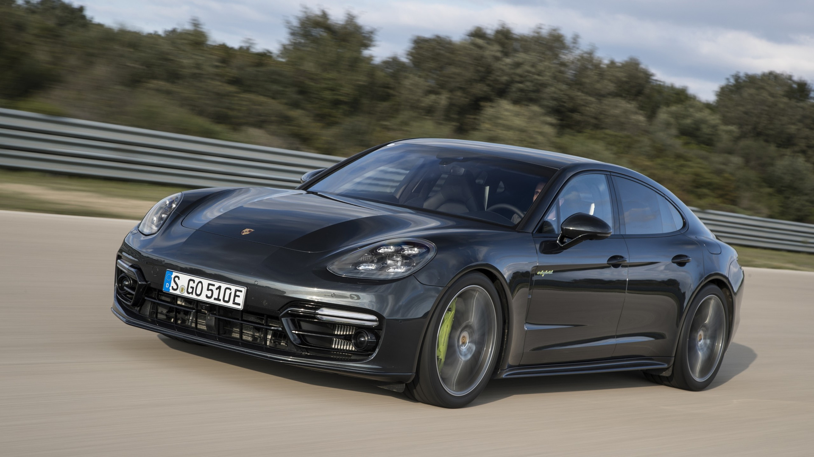

Família Panamera · Turbo S 2020
Panamera Turbo S.
Elegância para chegar. Performance para seguir. Uma interpretação do espírito Porsche que também valoriza o conforto de cada viagem.
Explorar os detalhes ↓Performance
Presença que vai além do design.
- Potência
- 630 cv
- 0 a 100 km/h
- 3,1 s
- Velocidade máxima
- 315 km/h
Dados de fábrica do Turbo S a combustão apresentado em 2020. Aceleração no modo Sport Plus.
Esportividade e conforto
Para aproveitar todo o caminho.
O V8 biturbo de 4,0 litros entrega 630 cv e 820 Nm de torque. No modo Sport Plus, o Panamera Turbo S alcança 100 km/h em 3,1 segundos, segundo os dados de fábrica.
A proposta reúne desempenho esportivo e conforto em uma carroceria de quatro portas. Para quem imagina viagens mais longas, o Panamera oferece uma maneira diferente de viver a identidade da marca.
Ver carrinho →| Motor | V8 biturbo a combustão |
|---|---|
| Cilindrada | 4,0 litros |
| Potência | 630 cv |
| Torque | 820 Nm |
| Versão | Turbo S, sem sistema híbrido |
| 0 a 100 km/h | 3,1 s no modo Sport Plus |
| Velocidade máxima | 315 km/h |